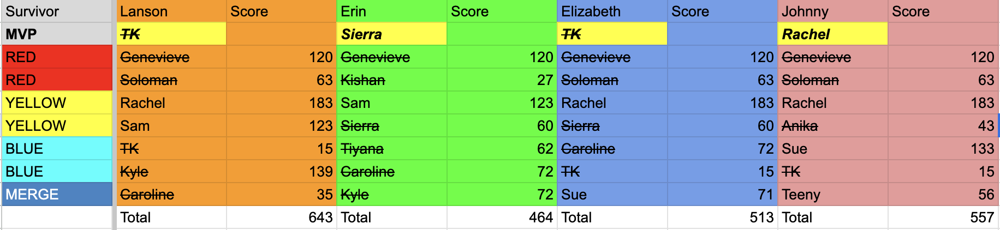
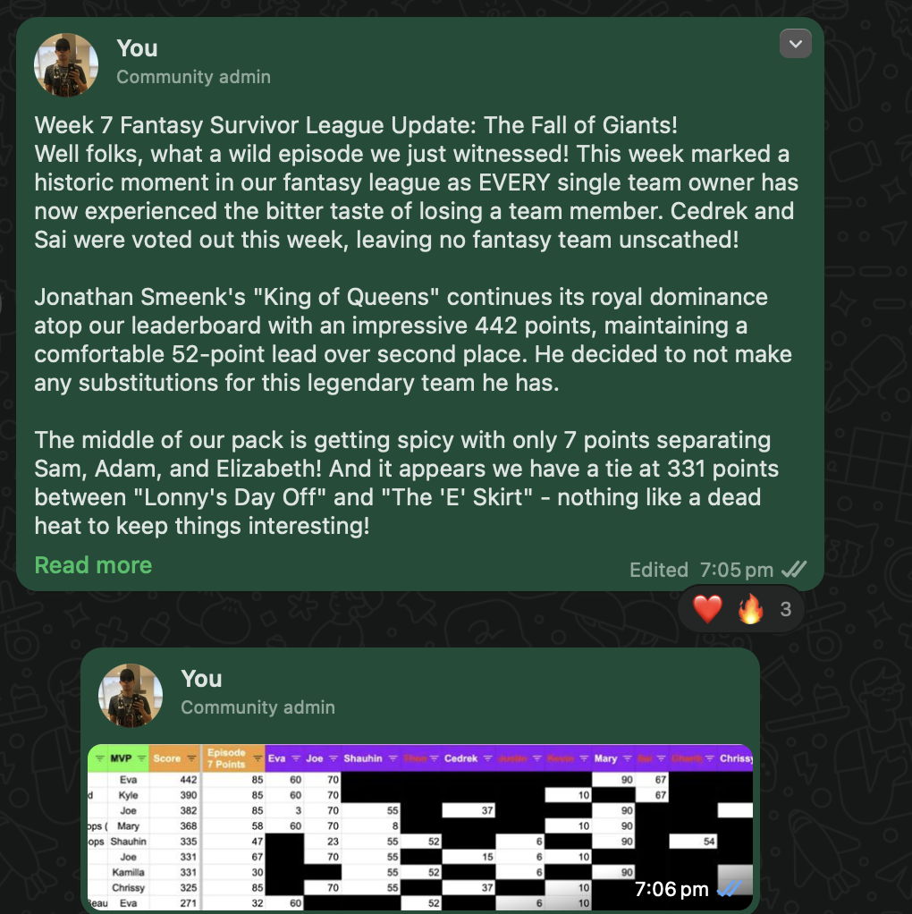

How You Can Use AI to Run a Survivor Fantasy Pool

Co-Pilot Your Commmissioner Duties!
I'm in my second season running a Survivor fantasy pool, and just like the game itself, I decided to raise the stakes. Our pool doubled in size, and I had to rethink how I managed everything—sharing scoring updates, keeping the system sustainable, and making sure it could scale in the future. That's when I turned to a few trusted allies: ChatGPT and Claude.
The Challenges I Had to Solve
Last season's setup got the job done. Team picks were sent to me by text, I entered them into Excel using some basic SUMIF formulas, and I'd share scoring updates as screenshots in a group iMessage chat with a bit of commentary. But with more people involved this time around, I knew I needed something smarter, faster, and more fun.
Here's how I reworked the entire experience.
Moving from iMessage to WhatsApp
One of the first changes I made was switching our group chat to WhatsApp. This ensured we weren't excluding anyone based on their device. WhatsApp also makes it easy to organize conversations. I set up two separate channels: one for official updates and rules, and another for memes, smack talk, and casual chat.
Automating Team Submissions with Google Forms
Manually inputting team names every season wasn't going to cut it anymore. I built a Google Form where players could submit their teams based on the cast of the current season. Using a few Sheets formulas, I linked the form to our scoring system so submissions would automatically update the spreadsheet.
When the merge rolled around and teams were allowed to add an extra player, I created a second form to handle those updates too. No more manual entry needed.
Upgrading Google Sheets
My original scoring spreadsheet worked, but it needed improvements to support a bigger league. I made the scoring table more compact so it could fit into a single screenshot, and I created formulas that could be reused season after season without needing a full overhaul.
One of the trickier challenges was connecting the Google Form responses to the main scoring chart. I used functions like QUERY, VLOOKUP, and FLATTEN to pull in data and organize it properly. It took some trial and error, but ChatGPT helped me figure out a final structure that worked well.
I also had to adjust the scoring logic once the merge happened. At that point, teams could add one new player, and I needed to ensure that player's points only counted from that episode onward. I changed the format of my data to make this possible and built a formula that calculated everything in one place:
=SUMIFS('Fantasy Data'!$C:$C, 'Fantasy Data'!$B:$B,H$1, 'Fantasy Data'!$A:$A, "<7") * COUNTIF(FLATTEN(SPLIT(VLOOKUP($C2,Form_Responses1[[#ALL],[What is your team name?]:[Formula]], 6, FALSE),", ")),H$1) +
SUMIFS('Fantasy Data'!$C:$C,'Fantasy Data'!$B:$B,H$1,'Fantasy Data'!$A:$A,">6") * COUNTIF(FLATTEN(SPLIT(VLOOKUP($C2,Form_Responses2[[#ALL],[What is your team name?]:[Formula]], 4, FALSE),", ")),H$1)It's long, but it gets the job done.
Adding Flair with AI Commentary
One of the most important parts of running the pool is keeping it fun. I wanted weekly updates to be more than just numbers—I wanted commentary with some flavor. But writing that every week takes time. That's where ChatGPT came in.
I gave it a prompt like this:
"You are a commissioner for a competitive fantasy Survivor league. Provide commentary on the latest scoring update with light banter. The first screenshot shows the current total scores and most recent episode scores. The MVP column shows each team's winner pick. The second screenshot shows how many points each Survivor scored this week."
For weekly updates, I'd give it details like:
"Star was voted out. Kyle won the individual reward. Joe won immunity."
If the reply was too bland or too long, I'd ask for something sassier, more concise, or full of emojis. Once I had something I liked, I shared it with the league through WhatsApp. I also used the AI assistant to build hype for upcoming episodes. It would remind everyone to tune in and give us a reason to root for—or against—certain players. (Sorry Kamilla and Mitch, I needed your downfall to catch up in the standings.)
A Look at the Evolution
Here's where we started and ended up:
- Season 1 Spreadsheet
- Current Season Spreadsheet
- Season 47 Scoring Update Example:

A sample update sent to the league, with no commentary to go with it. - Season 48 Scoring Update Example:

A sample update sent to the league, with commentary to go with it.
It's a big step up—from static screenshots to dynamic sheets and AI-powered storytelling.
What's Next?
There's still room to grow, and I've got a few ideas in the works:
- Champion's Cup: A virtual trophy that lists each season's winner, their MVP, and their final score.
- End-of-Season Survey: I created a Google Form to collect feedback on what worked, what didn't, and what players want to see next season.
- Buy-In: A small entry fee to support fun prizes or a physical trophy.
- Mini Awards: Fun categories like "Best Meme" or "Most Dramatic Meltdown."
I'm not sure how many of these I'll implement, but I love watching this little Survivor community grow. Whether it's strategizing, trash-talking, or cheering on our MVPs, we're all here for the greatest reality TV show on Earth.
If you've got ideas, want to swap strategies, or are curious about setting up a Survivor fantasy pool of your own, feel free to reach out — I'd love to hear from you. You can contact me at lanson@lansonvandyke.com. Let's make next season even better.